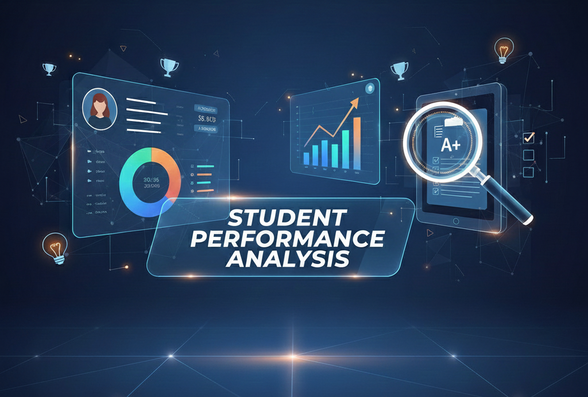

Credit Risk Analysis
Finance AnalyticsLeveraging Machine Learning to quantify lending risk and predict payment delinquency.
See My Work
Student Performance Analysis
Business AnalyticsIdentified the top 3 predictors of student success using Python, providing data-driven recommendations for academic intervention.
See My Work